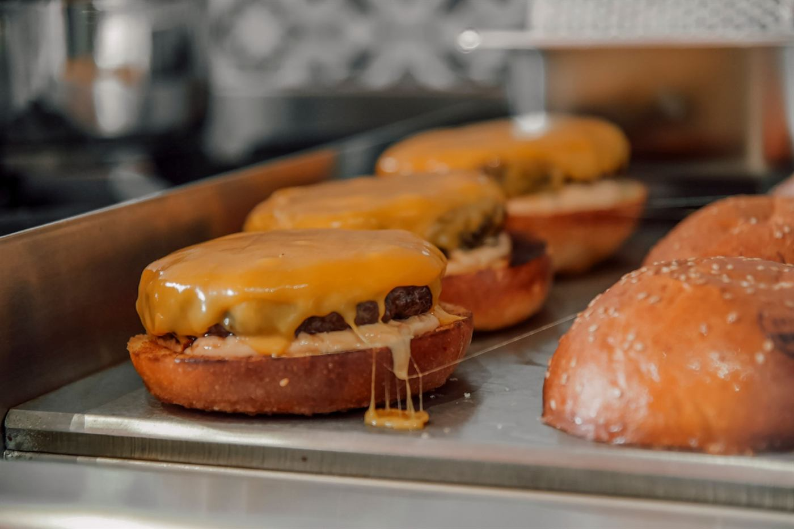
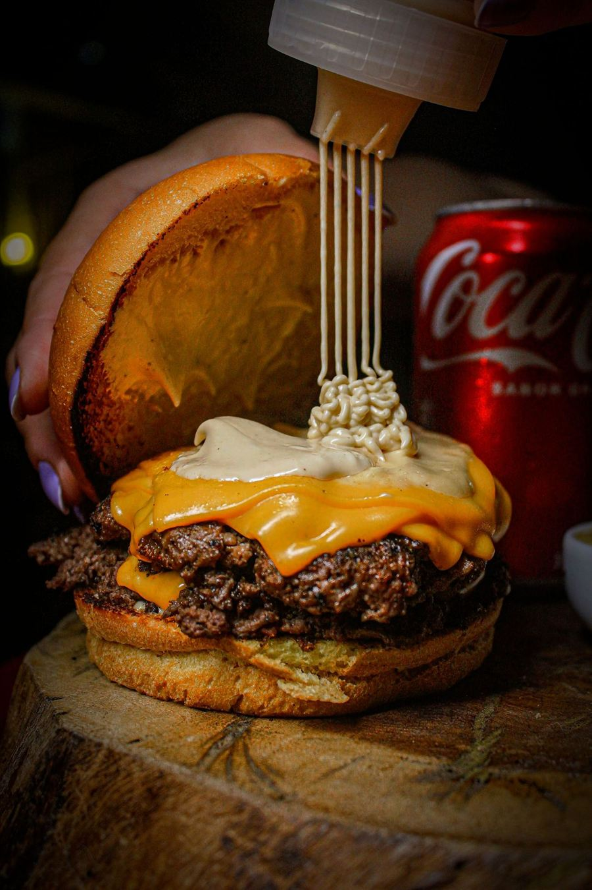
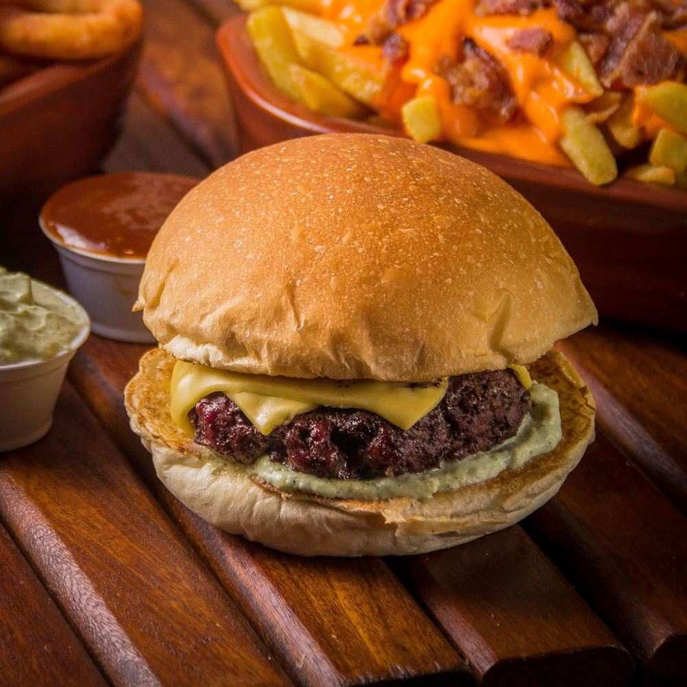
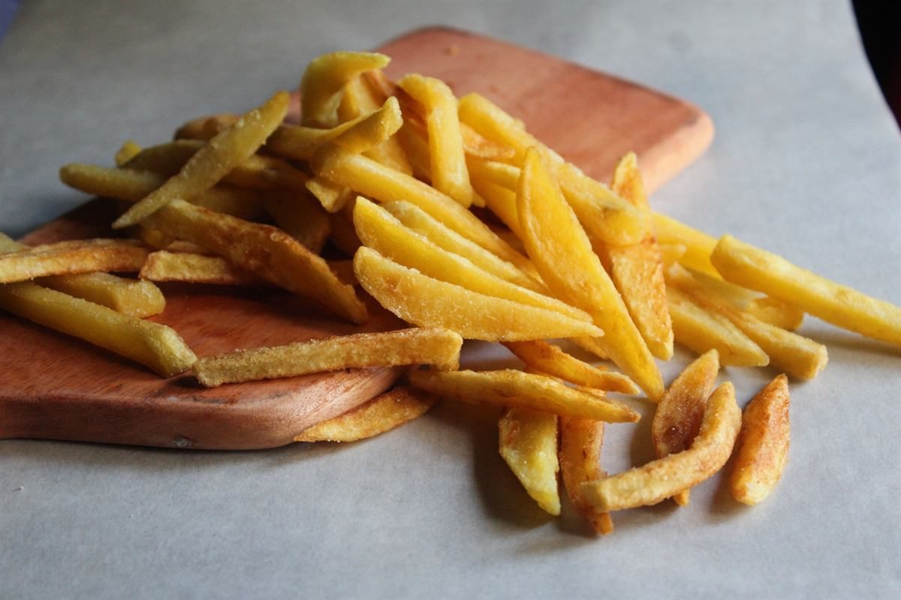
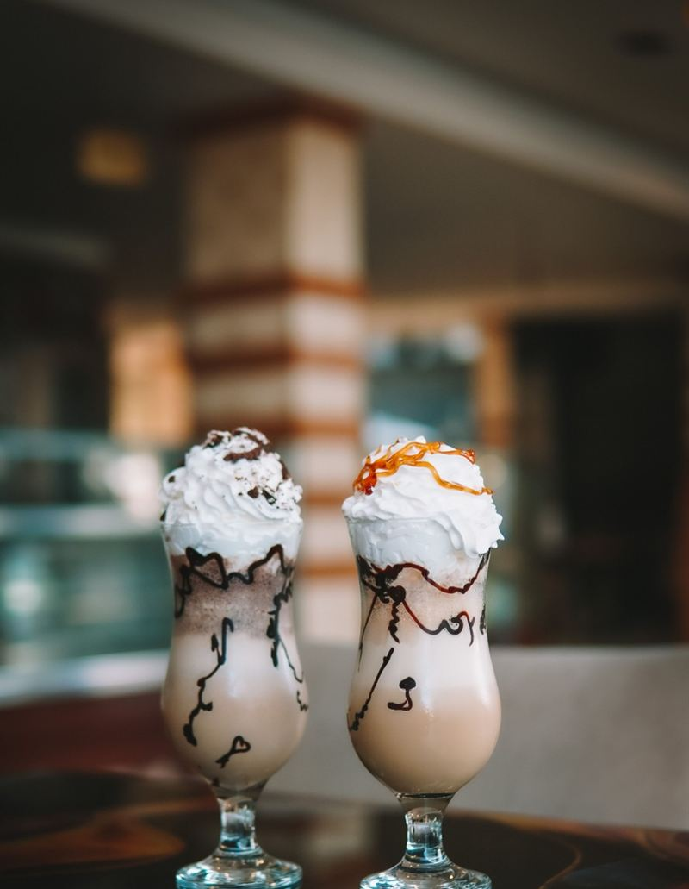
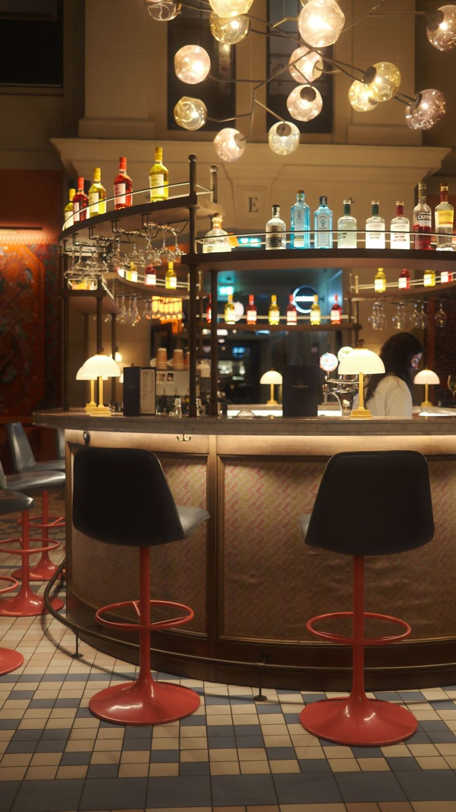
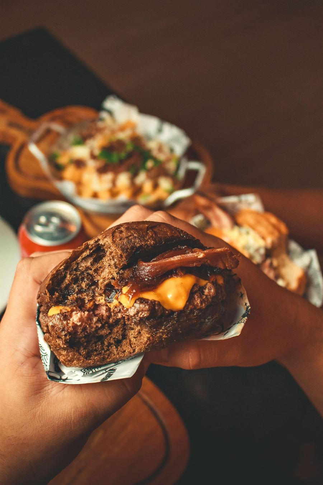
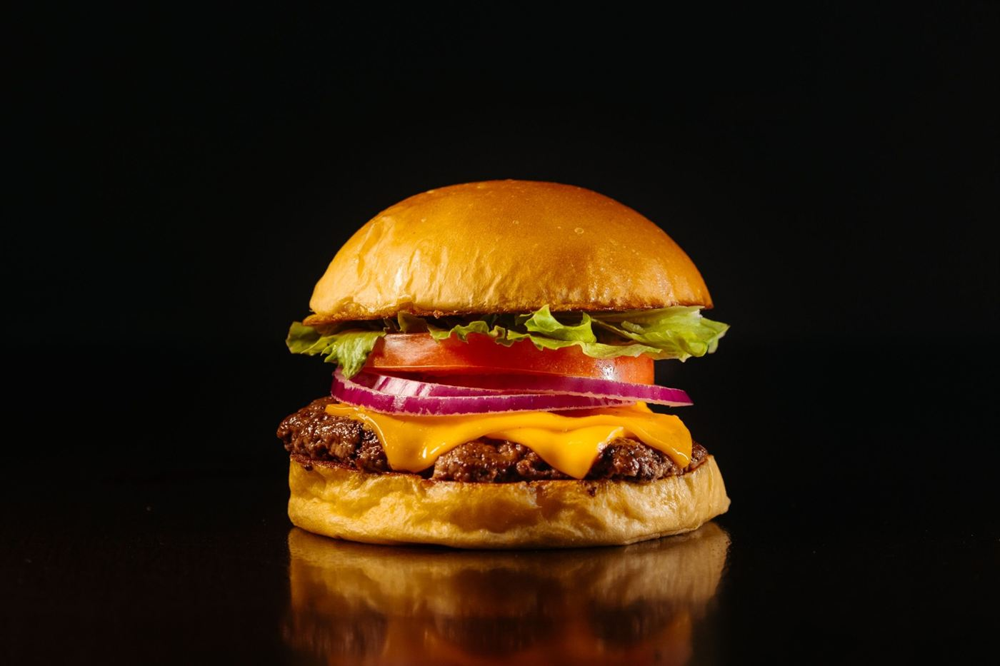

O Chapa
o da casaDuas carnes de 90 g, cheddar duplo, cebola na chapa e molho da casa.
R$36
Smash burger · Setor Bueno, Goiânia
Bola de 90 g, chapa a 230 °C e dez segundos de espátula. Senta no balcão ou pede pelo WhatsApp.
Terça a domingo, a partir das 18h
Demo · Porta StudioNa chapa
É o tempo entre a bola de carne e o burger na sua mão. Acompanhe no timer enquanto rola.
0:00
90 g de blend de acém e costela, moído no dia e enrolado na mão. Cai na chapa ainda gelado.
0:10
Espátula pesada em cima e o peso do corpo junto. A carne abre e encosta inteira no ferro. Sal e pimenta por cima.
2:00
Ninguém encosta. A borda escurece e fica crocante, e é nessa crosta que mora o gosto do smash.
2:30
Vira de uma vez só, cheddar por cima e abafa. Em trinta segundos o queijo escorre pela borda.

2:40
Pão de brioche selado na manteiga e o molho da casa. Sai da chapa direto pra sua mão.

Cardápio
Toque em Pedir para ir montando a comanda. Quando terminar, ela vai pronta pro WhatsApp.
Duas carnes de 90 g, cheddar duplo, cebola na chapa e molho da casa.
R$36
Uma carne de 90 g, cheddar, alface, tomate, cebola roxa e maionese da casa.
R$29
Duas carnes, bacon, cheddar, cebola caramelizada e barbecue da casa no pão australiano.
R$39
Duas carnes, queijo meia-cura, cebola roxa e maionese de pequi. O pequi divide opinião, aqui ele divide o pão.
R$38
Três carnes de 90 g, cheddar triplo, bacon e molho da casa. Pra quem chegou com fome de verdade.
R$46
Smash de grão-de-bico e cogumelo, queijo prato, alface, tomate e maionese de ervas.
R$34

O Chapa, batata da chapa e refri lata. Separado sai R$ 59.
R$52

Porção individual, sal e alecrim.
R$16
Cheddar cremoso e bacon picado por cima.
R$26
Empanados na hora, com maionese da casa.
R$22

Doce de leite, chocolate ou café com caramelo.
R$22
Limão, hortelã e bastante gelo.
R$12
350 ml, bem gelado.
R$7
Valores de exemplo, para demonstração.
O balcão
A Chapa é uma hamburgueria de balcão no Setor Bueno. As banquetas ficam viradas pra chapa: você pede, assiste a prensa e come o burger quente, do jeito que ele sai.
Tá com pressa? Leva pra viagem ou pede pelo WhatsApp, que a gente entrega no bairro.
14banquetas de frente pra chapa
1 mde chapa de ferro
0micro-ondas na cozinha

Fotos
Do Certinho com salada ao milkshake de doce de leite.

2:40
da bola até a sua mão
tsss!
Fotos ilustrativas.
Avaliações
Quando o site for da sua hamburgueria, a nota e os comentários do Google aparecem neste espaço. A gente não inventa avaliação.
Onde fica
Terça a domingo, a partir das 18h
Pagamento: Pix, cartão e dinheiro.
Entrega: Setor Bueno e bairros vizinhos, com pedido pelo WhatsApp.
A chapa liga às 18h. Pede pelo WhatsApp ou chega no balcão com fome.